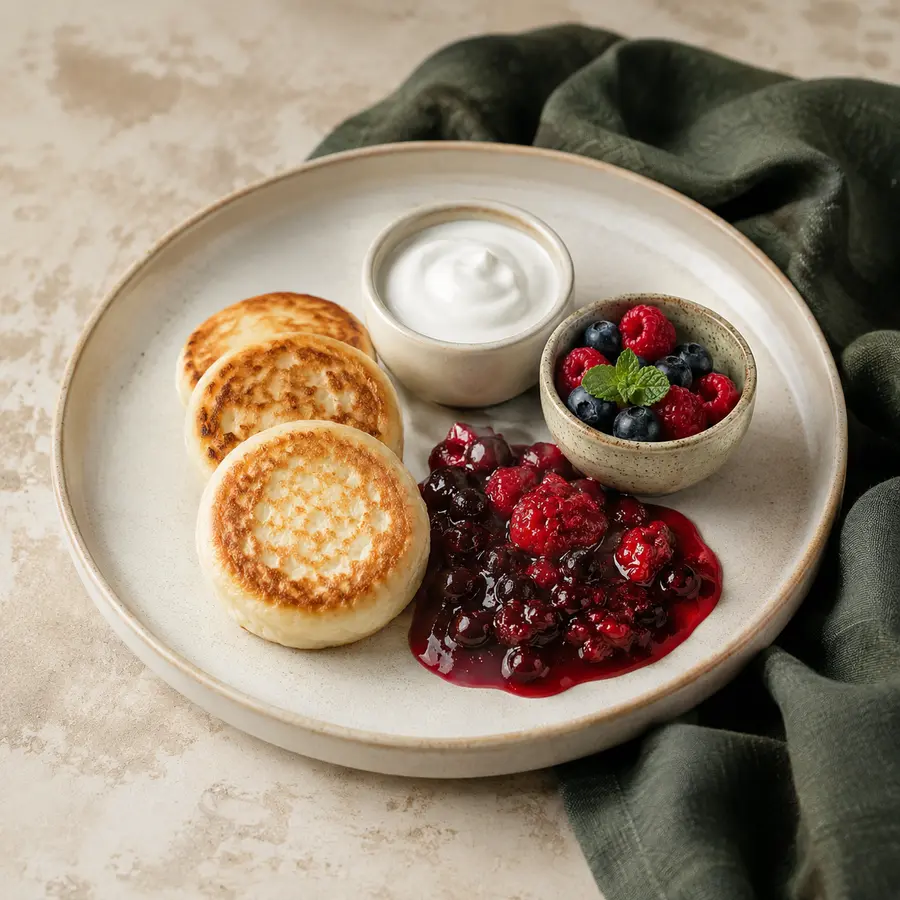
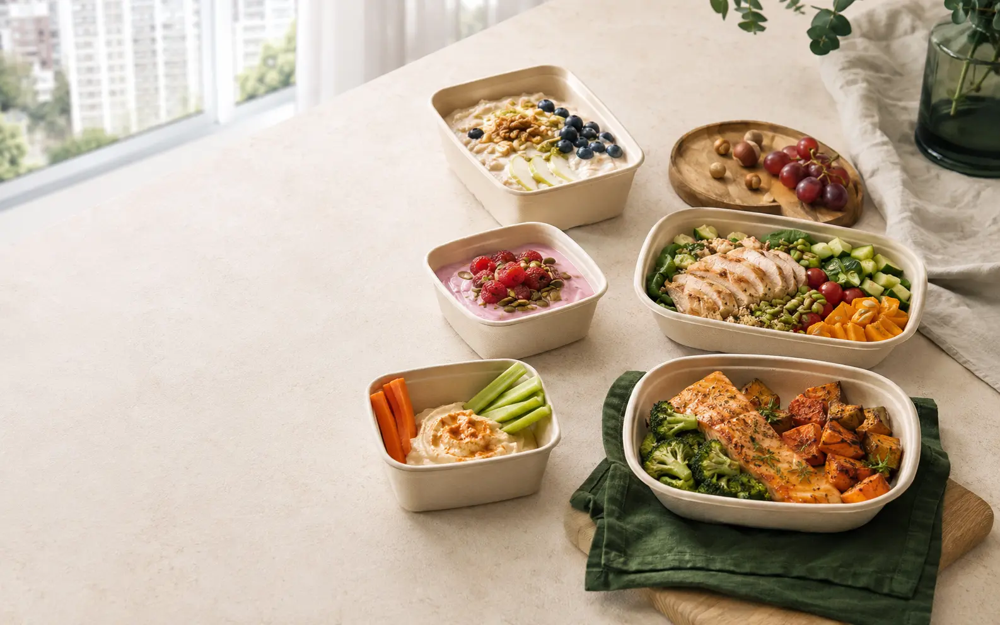
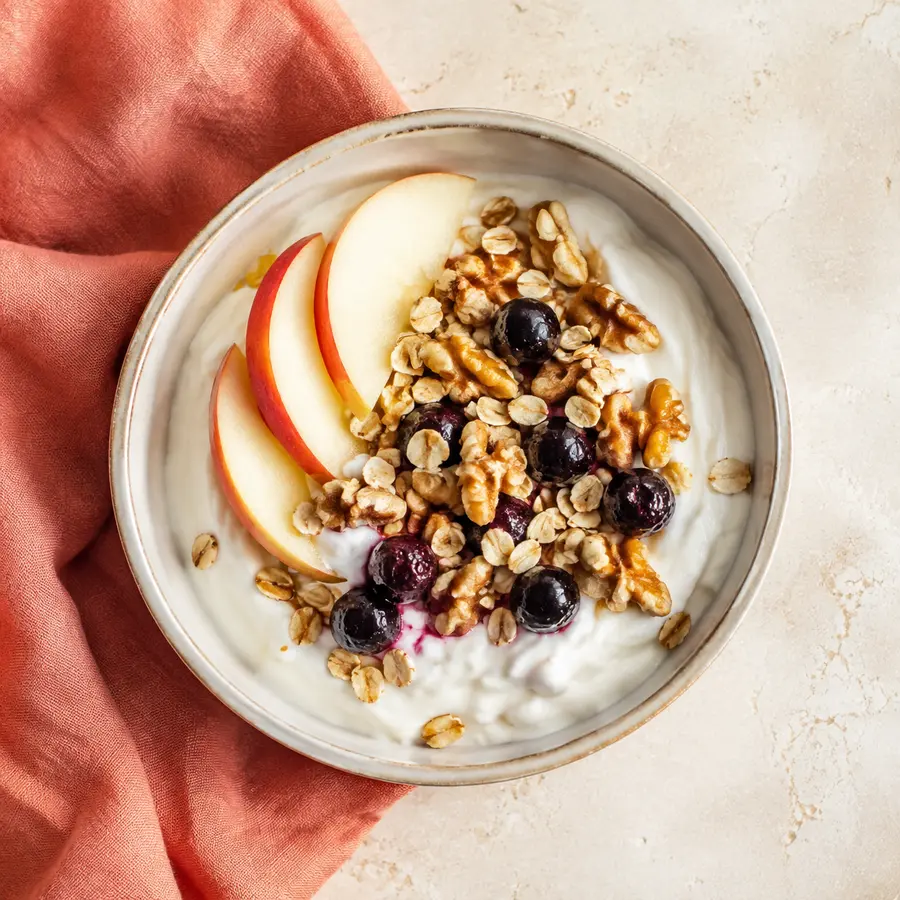
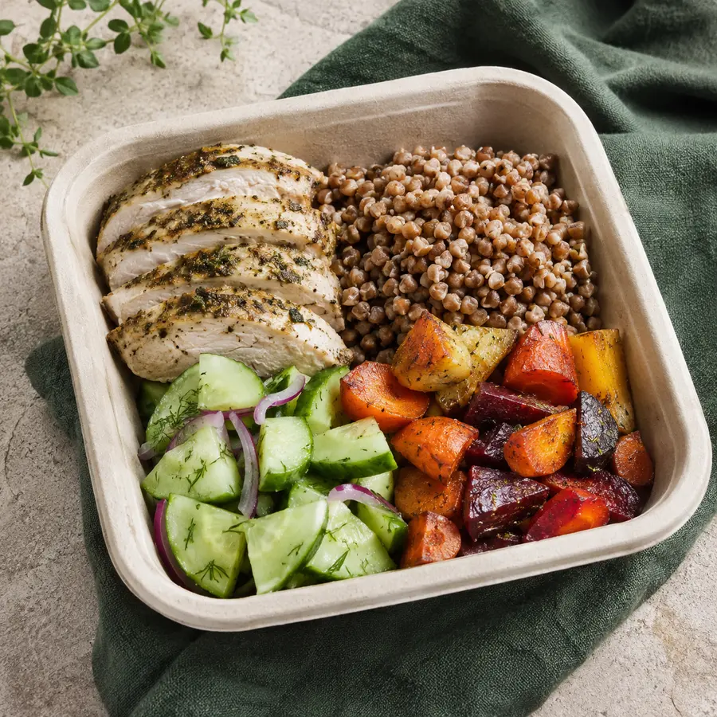
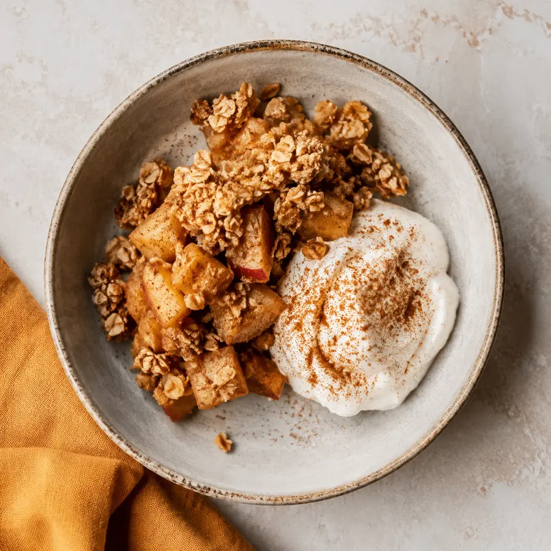
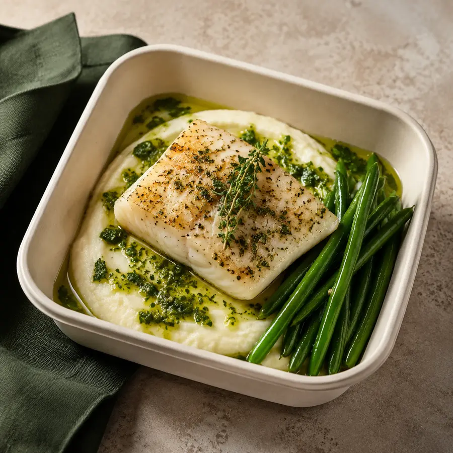
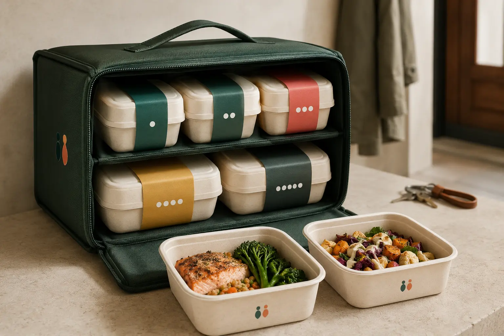

01Завтрак
Сырники, ягоды и натуральный йогурт.
STIMUL FOOD берёт на себя меню, порции и приготовление. Вы выбираете цель и число дней — мы показываем понятную программу, состав и стоимость.

Расчёт помогает выбрать продуктовый формат и не заменяет медицинскую консультацию.
В каждой программе — пять приёмов пищи. Меняется энергетическая ценность и размер порций, а логика дня остаётся понятной.
Показываем не абстрактный контейнер, а последовательность дня. Полный каталог доступен на странице меню.

01Сырники, ягоды и натуральный йогурт.

02Йогурт, яблоко, хлопья и орехи.

03Курица, гречка и два вида овощей.

04Яблочная запеканка и творожный крем.

05Белая рыба, нежное пюре и фасоль.

Цвет программы и точки последовательности помогают быстро найти нужный приём. Контейнеры собраны в один переносимый комплект.
STIMUL FOOD строится вокруг прослеживаемого меню, аккуратной сборки и понятной коммуникации.
Название, состав, выход и пищевая ценность связаны в одной системе данных.
Каждая программа масштабируется по заданным коэффициентам.
Пять приёмов отделены, пронумерованы и собраны в порядок дня.
Расчётные показатели не выдаются за лабораторные или медицинские.
Выберите программу, число дней и удобный способ ответа. Перед началом подтверждаются состав, доступность и получение.

Автор и руководитель проекта
Марков Павел Андреевич